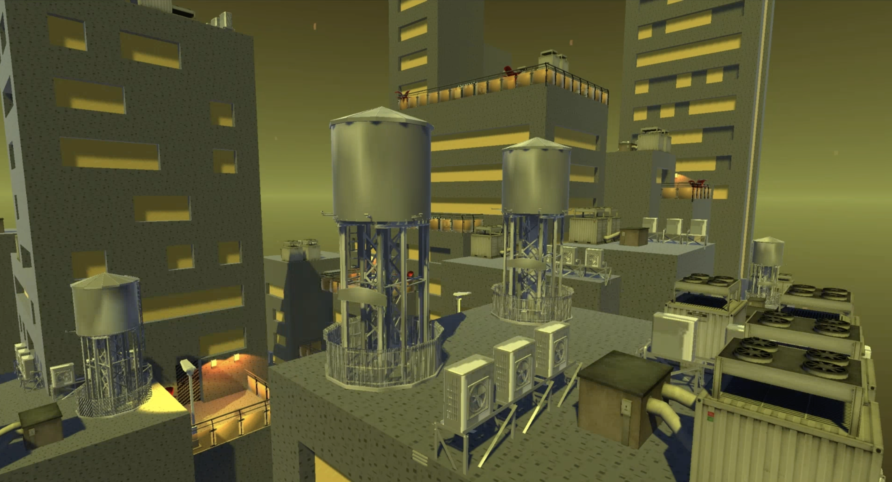

Nexus Horizon is a program which procedurally generates a futuristic-looking city and is a series of connections linking several things, which is precisely the reason why it was named thus. The city can be regenerated completely in a matter of seconds by merely pressing the key “R”. It also provides interactive generation, allowing the user to remove any props they wish or to even regenerate entire facades, rooftops or balconies with the mere click of a mouse.
Technical approach
Our initial aim being to completely program the procedurally generated city using exclusively wave function collapse, a considerable amount of time was invested in coding and debugging the WFC algorithm. This wasn’t trivial as at first there was a few bugs that prevented it from functioning properly, which led to a very lengthy session of debugging until, finally the issues were resolved.
This is how wave function collapse works: At first you need to define an input map which will be used to produce the result. In our case we usually utilised 20 by 20 string arrays containing a particular pattern, so please refer to the WaveFunctionCollapse.cs file for a number of examples (the tiles). Once that is done, there is the initialisation step where a predetermined symbol is placed. For example, to create the demo terrace we used the symbol ‘-‘ which represents a simple concrete floor not containing any prefabs on it.
Now, the actual algorithm can begin: All the surrounding tiles of that symbol within a particular radius, which we called “dimension”, were considered and all blocks which could theoretically be placed were then taken, before being compared with the input map in order to eliminate all those which are inconsistent with the desired input. This is useful because if in your input map you drew squares because you wanted to have a jagged or peaked output, this will likely mean that you will not obtain a result having circles. Finally, out of all the remaining tiles, the one is chosen which has the least possibilities. This is necessary to minimise the number of tiles where no possible solution is found. Our implementation usually shows these errors with a different coloured block. (For more reference please see “Wave Function Collapse Explained” available on https://www.boristhebrave.com/2020/04/13/wave-function-collapse-explained/)
However, we soon realised that either our implementation was too slow or this was simply the algorithm’s fault due to its exponential complexity and after attempting to place only a few roofs on our buildings using WFC, it took so long that it became that it become clear that using it to generate the facades and roofs of our buildings was not an option. It is for this very reason that we procedurally generate a facade and a terrace to the left of the city to demonstrate our implementation. Please note that it takes so long that when clicking the button “R” to regenerate and obtain new results, it won’t be the city which takes so much time to create but that one single small terrace. This should give an idea of the slowness of either our implementation of WFC or the algorithm in general. Furthermore, we also used WFC to create eight textures in total and applied them to our city, namely the following: door, flower pot, table, window, concrete, two types of metal and cloth for the couch.
Therefore, we decided to create our own algorithm to generate the city, which functions as follows. During the first run, we applied an algorithm which was named “Anchored Cuboids”. In this part, the algorithm first generates the ground, and then contiuously generate cuboids one-by-one until a specified percentage of the space is filled by the cuboids (we set it to 30% in our implementation). To create one of these cuboids, a position among the ground or the existing cuboids is chosen. The position inside the cuboids must at least at a specified distance from the walls, floor, and roof. Then the volume of and orientation of the cuboid is randomly chosen. The the height of the cuboid is randomly chosen, and we do the same for the width. Then finally the length is determined by the volume, height and width. Note that each of these aatributes have their own minimal and maximal values. This process makes sure that the city is physically coherent and ensures variety in its results.
Secondly, after having constructed the blank buildings, we implemented an algorithm that detects the faces of the cuboids. It first iterate over all empty block, and then for each of the neighbors of the current block that are part of a cuboids, the algorithm searches along the plane that is perpendicular to the axis containing the block and its examined neighbor. It records the surface formed by all the blocks found in that search (with some filters to prevent blocks inside cuboids to be wrongly added). After having found the surfaces, the vertical surfaces (i.e the ones aligned along either the X or Z axis) are modified to include windows. Different simple algorithms are used to place the windows. The most notable one generates lines of windows by iterating over the blocks and placing either a building or window block, with different probabilities depending on the type of the previous block. Finally a door is randomly generated at the bottom of the surface, if some conditions are met (e.g there must be enough free space directly in front of the door).
And thirdly, props are placed on hroizontal surfaces. There are essentially two different kinds of areas: the rooftops and the balconies. The latter are created when at least one door is present, which allows the placing of flower pots, couches, sitting lounges and railings. Railings are created on the borders of the surface. When there aren’t any doors, then it’s the rooftops which are instead generated but using different props which we labelled “utilities”. These include the water tower, ventilators and so on.
We also implmented mouse interactions with the city. When the user clicks on the window of a facade all the other windows are removed. When they click on any other block the facade is then regenerated. It is also possible to remove a door by clicking on it. Similarly, clicks on the blocks of a terrace or rooftop rgenerates the props. Note that the theming of flat surfaces remains coherent: if a door is added next to a rooftop, the rooftop turns into a terrace, and if the only door connected to a terrace is removed, the terrace turns into a rooftop. If a terrace has multiple doors, removing one has no effect. Clicking on a prop simply removes it (though clicking on a railing prop removes all the railings on that terrace).
Results
Initial ideaFinal result
Demo Facade
To begin we shall present two results which were generated using our implementation of the wave function collapse algorithm. Shown below is an image of a demo facade:
– The omnipresent grey block is obviously a concrete wall
– The blocks in yellow are the windows,
– Those in brown are billboards
– Green is the colour for pipes winding their way around the building
– The protruding grey blocks are balconies
Demo Facade
Demo Terrace
We have also created a demo terrace which demonstrates the wave function collapse algorithm on flat surfaces and uses its output in order to place prefabs accordingly. Please note two things:
– The only part that was added later manually and is not the product of WFC are the railings on the border. Generating something like this using WFC is almost impossible given the fact that the algorithm has no awareness of its surroundings and thus cannot know where the terrace starts or ends.
– Thanks to WFC, one may see how certain rules apply: lamposts are only spawned on the borders and may never appear anywhere else.
Demo Terrace
Textures
Almost all textures used in this project were generated using WFC and consist of the following: door, flower pot, table, window, concrete, two types of metal and cloth for the couch. Please see below for some examples. Although the textures may not look like much individually, when put on the assets, the result is more than satisfying. Most striking perhaps is the table with its aesthetically pleasing circular design.

The City
As explained, clicking the key "R" allows to regenerate the city as well as the demo terrace and facade. Note that occasionally this may result in an exception where nothing is generated; this is normal and can be ignored – simply pressing "R" again will regenerate a new scene. Please see below a few images of what this program is capable of generating. As previously explained, the city itself can be further customized by clicking on the surfaces or props. It is also possible to move(with the W, A, S, D, shift, and space keys) and rotate the camera (with the arrow keys) to explore the city.
Contributions
– Alain Mérillat: WFC creation & debugging, demo facade, main contribution to city generation (conceptor of the project)
– Heikel Jebali: Generation of textures using WFC perfectly matching the theme
– Danny Seel: Debugging of WFC, demo terrace and secondary contribution to city generation
References
– Unity (3D)
– Blender (the created models ended up not being used)
– Wall Mounted Lamp: https://www.cgtrader.com/free-3d-models/architectural/lighting/outdoor-lamp-wall-mount
– Water Tower: https://www.cgtrader.com/free-3d-models/architectural/decoration/water-tower-a77df2fd-0b67-4c12-8d80-e7c3bb736cc8
– Air Conditioner Compressor: https://www.cgtrader.com/free-3d-models/architectural/decoration/air-conditioner-compressor-unit
– Cooling Unit: https://www.cgtrader.com/free-3d-models/industrial/other/cooling-units-10d9a373-dc8b-48d0-807d-b020ca57bad9
– Ventilation: https://www.cgtrader.com/free-3d-models/architectural/other/ventilation-prefab
– Table Set: https://www.cgtrader.com/free-3d-models/furniture/table/cocktail-table-bar
– Wall AC Units: https://www.cgtrader.com/free-3d-models/industrial/industrial-machine/air-conditioners-pack:
– Modern door: https://www.cgtrader.com/free-3d-models/architectural/door/aluprof-mb-86-drzwi-panelowe-010-m-0459-a075c896-7bd4-456c-86d9-2ed7dc64d1f9
– Wooden sofa: https://www.cgtrader.com/free-3d-models/furniture/sofa/3d-sofa-18d45287-775d-472d-b7a5-e9b7702ae342
– Large couch: https://www.cgtrader.com/items/2866734/download-page
– Neon signs: https://www.cgtrader.com/free-3d-models/exterior/sci-fi-exterior/neon-signs-pack-a537c337-2a62-48ab-a45d-1f82d2713791
- Railings: https://www.cgtrader.com/free-3d-models/architectural/door/baranda-glazed
- Plants: https://assetstore.unity.com/packages/3d/vegetation/plants/plants-150261
- Skybox and shader: https://assetstore.unity.com/packages/vfx/shaders/free-skybox-extended-shader-107400
- Priority queue (excluding the Update method): https://gist.github.com/e-sarkis/716c4415254a22c2b2f9eb8d9df777f5